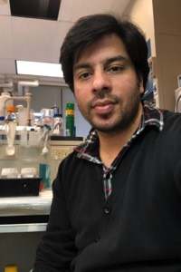
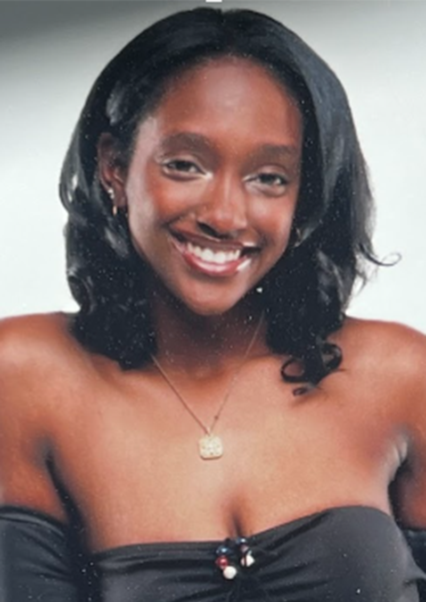

Lab Members

Sohyun Bang
Position: Graduate Student - Institute of Bioinformatics
About Me:
M.S. Seoul National University
B.S. Sookmyung Women's University
Google Scholar
Haley Clause
Position:
Research Technician
About Me:
B.S. University of Georgia

Yinxin Dong
Position:
Research Professional
About Me:
Ph.D. Northwest A&F University
B.S. Northwest A&F University

Aye Htun
Position:
Administrative Specialist
About Me:
B.S. Columbia University
Hosung Jang
Position:
Postdoctoral Fellow
About Me:
Ph.D. Seoul National University
M.S. Seoul National University
B.S. Seoul National University
Google Scholar
Yamini Kantamneni
Position:
Research Technician
About Me:
B.S. University of Georgia
Xiang Li
Position:
Postdoctoral Research Fellow
About Me:
Ph.D. University of Massachusetts Amherst
M.S. Wuhan University
B.S. Jianghan University
Ziliang Luo
Position:
Postdoctoral Fellow
About Me:
Ph.D. Agronomy, University of Florida
B.S. Huazhong Agricultural University
http://ziliangluo.com
Google Scholar

Pablo Mendieta
Position:
Postdoctoral Fellow
About Me:
Ph.D. Genetics, University of Georgia
B.S. University of Colorado, Boulder
Google Scholar

Cullan Meyer
Position:
Graduate Student - Genetics
About Me:
B.S. University of Wisconsin - Madison
Mark Minow
Position:
Postdoctoral Research Fellow
About Me:
Ph.D. University of Guelph
B.S. University of Guelph

Ankush Sangra
Position:
Graduate Student - Genetics
About Me:
M.S. Fort Valley State University
B.S. G.G.M Science College Jammu, India

Bob Schmitz
Position:
Professor
About Me:
NIH Postdoctoral Fellow, Salk Institute
Ph.D. University of Wisconsin
B.S. University of Arizona
Google Scholar
Contact Me
Kevin Sun
Position:
Graduate Student - Bioinformatics
About Me:
B.S. Emory University
Alexandra Tadros
Position:
Graduate Student - Genetics
About Me:
B.S. Georgia State University

Yangyang Xu
Position:
Laboratory Technician
About Me:
M.S. China Agricultural University
B.S. Henan Agricultural University

Nan Yao
Position:
Graduate Student - Genetics
About Me:
B.S. Sun Yat-sen University
Hao Zhang
Position:
Postdoctoral Fellow
About Me:
Ph.D. University of Chinese Academy of Sciences
M.S. Shandong Agricultural University

Xuan Zhang
Position:
Postdoctoral Fellow
About Me:
Ph.D. Crop Genetics and Breeding, China Agricultural University
B.S. Huazhong Agricultural University
Undergraduate Researchers
Lyndsie Dean
J'Myya Williams
